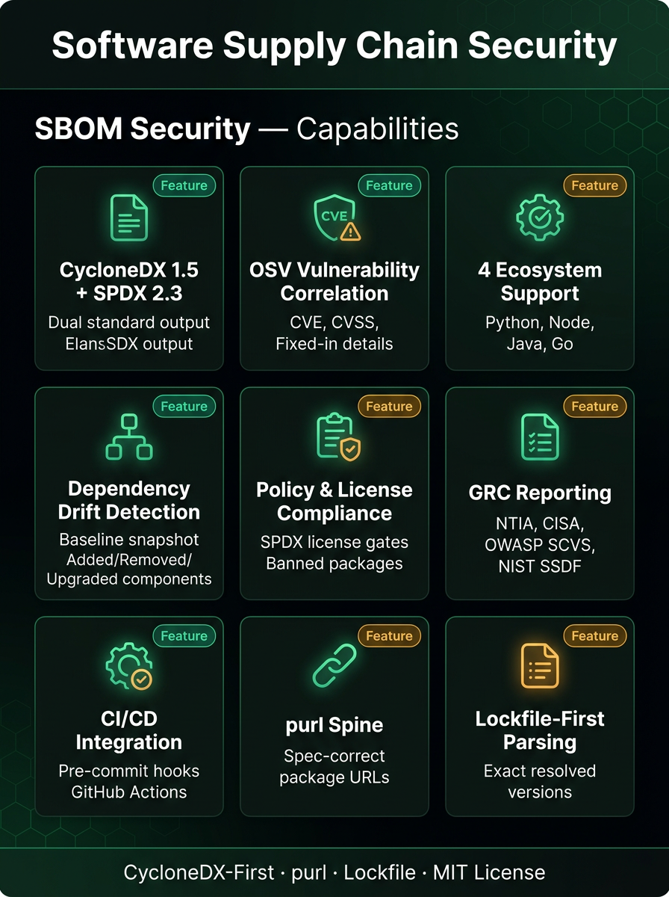
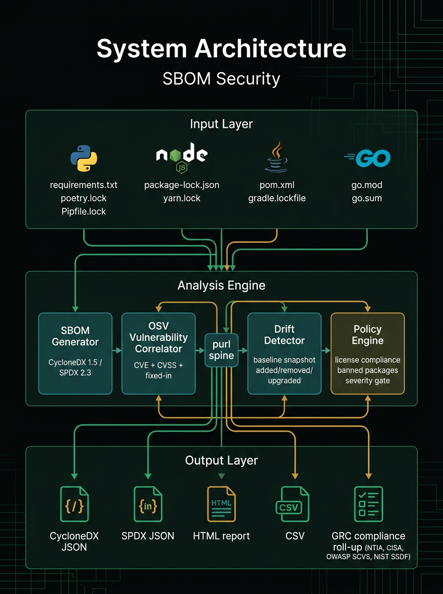
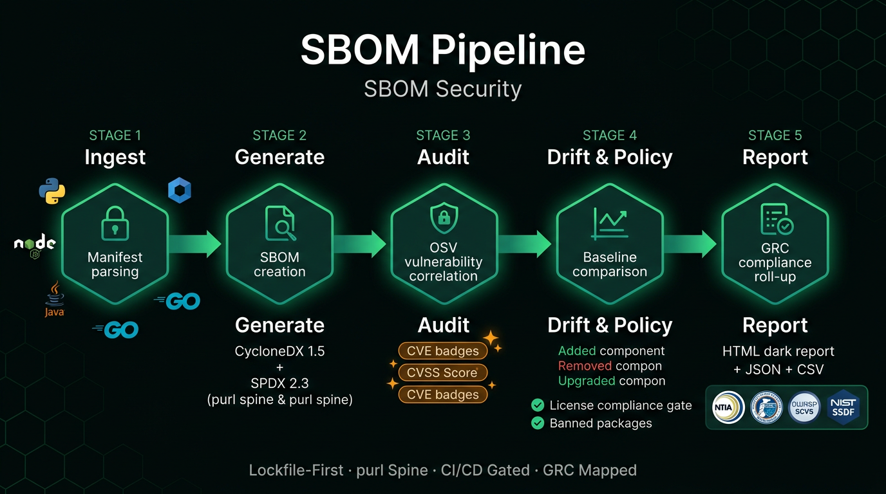
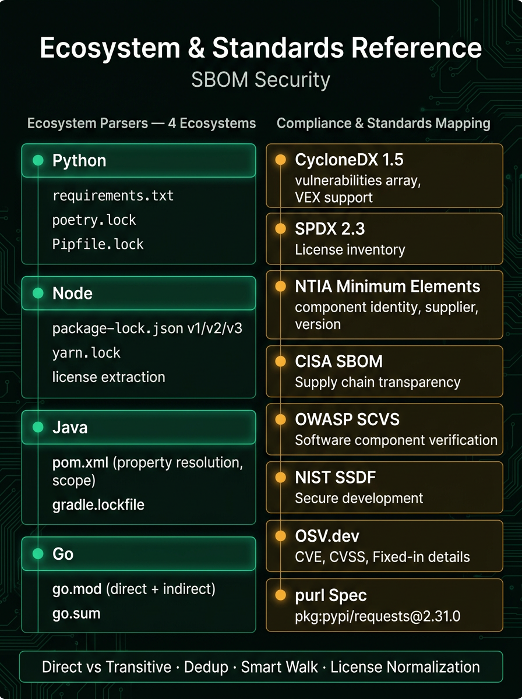

01Overview
SBOM Security turns a project's lockfiles into a security-grade software bill of materials and then does the work an inventory alone can't: it correlates every component with known vulnerabilities, tracks how dependencies drift between scans, and enforces license and supply-chain policy as a CI gate. It is CycloneDX-first — the OWASP standard with native vulnerability/VEX support — and also emits SPDX 2.3, so the same scan feeds both security tooling and procurement/GRC workflows.
The design is deliberately opinionated. It reads resolved, exact versions from lockfiles rather than manifest ranges, so an SBOM records what is actually installed. Every component is assigned a spec-correct package URL (purl) — `pkg:pypi/requests@2.31.0` — which becomes the spine for OSV vulnerability lookup, cross-ecosystem drift comparison, and dedup. Parsing is pure-stdlib (no `requests`/`toml`), keeping the dependency surface of a supply-chain tool honest and its footprint minimal on Python 3.10+.
It covers four ecosystems out of the box — Python, Node, Java/Maven, and Go — each behind a pluggable `BaseParser`. Beyond generation, it queries OSV.dev by purl to attach CVEs with CVSS score, severity, and fixed-in version; snapshots a baseline so `drift` reports added/removed/upgraded/downgraded components and `audit --baseline` surfaces only newly-introduced vulnerabilities; and evaluates a YAML policy for denied/allowed SPDX licenses, banned packages, and a maximum vulnerability severity.
For security leaders it is a portable, auditable supply-chain check that drops into pre-commit and GitHub Actions, produces a combined JSON/CSV/HTML report, and rolls results up to NTIA minimum elements, CISA SBOM, OWASP SCVS, and NIST SSDF controls. Network failures fail safe — components are left un-enriched rather than reported as clean — so the gate never manufactures a false all-clear.
02Key Capabilities
Dual-standard SBOM output
Generates CycloneDX 1.5 or SPDX 2.3 JSON with document metadata, per-component purl, licenses, and properties (ecosystem, direct/transitive, scope, source file).
Four-ecosystem lockfile parsing
Resolves exact versions from Python (requirements/poetry.lock/Pipfile.lock), Node (package-lock v1/v2/v3, yarn.lock), Maven (pom.xml + gradle.lockfile), and Go (go.mod/go.sum).
OSV.dev vulnerability correlation
The audit command batch-queries OSV by purl and attaches each CVE/advisory with CVSS score, severity bucket, and fixed-in version to its component.
CI severity gate
--fail-on <severity> exits non-zero when any finding meets or exceeds a threshold, turning the audit into a hard build gate.
Dependency drift & baseline
Snapshot a project with baseline, then drift reports added/removed/upgraded/downgraded components against it, with --fail-on-drift to gate CI.
New-vulnerability-only auditing
audit --baseline suppresses vulnerabilities already recorded in the baseline, so accepted risk stays quiet and only newly-introduced CVEs surface.
License & package policy engine
A YAML policy enforces allowed/denied SPDX licenses, an allow/warn/deny unknown-license mode, banned packages by name/ecosystem/version, and a max vulnerability severity — any error-level violation fails the build.
Combined GRC report
The report command writes a self-contained JSON/CSV/HTML report bundling SBOM, vulnerabilities, policy violations, and a compliance roll-up.
SPDX license normalization
Maps inconsistent license spellings (Apache License, Version 2.0 to Apache-2.0) onto SPDX IDs so policy and SPDX export are reliable; unknown values pass through untouched.
Fail-safe networking
OSV queries use a hard timeout with an injectable HTTP layer; any network error leaves components un-enriched and returns a warning rather than a false clean bill of health.
Smart project walk & dedup
Skips vendored directories (node_modules, .venv, dist, target) and dedups by (ecosystem, name, version), with a _merge step letting authoritative files enrich sparser ones.
Pre-commit & GitHub Actions ready
Ships .pre-commit-hooks.yaml (sbom-audit, sbom-policy) and a CI workflow with a 3.10-3.12 test matrix, SBOM artifact, and vulnerability gate.

03Architecture
A Click CLI drives a linear pipeline: SbomGenerator walks the project tree (skipping vendored dirs), dispatches each file to a matching ecosystem BaseParser, builds spec-correct purls, and dedups/merges into an Sbom model. Downstream engines consume that model — CycloneDX/SPDX serializers, an OSV client for vulnerability correlation, version/drift/baseline for change tracking, a policy engine for gating, and a reporter/compliance layer for GRC output. purl is the shared key that ties correlation, drift, and dedup together.


04Project Structure
main.pyClick CLI entry point wiring the generate/audit/check/baseline/drift/report/list-components commands.core/Engine, models, purl builder, CycloneDX/SPDX serializers, OSV/CVSS, drift/baseline, policy, reporter, and compliance modules.parsers/BaseParser ABC plus python, node, maven, and go ecosystem parsers.config/policy.example.yamlTemplate policy: license allow/deny, unknown-license mode, banned packages, and max vulnerability severity.tests/55 pytest tests across test_sbom + test_phase2-6; vulnerability tests inject a fake HTTP layer (no real network)..github/workflows/ci.ymlCI: pytest matrix (Python 3.10-3.12) plus SBOM artifact generation and a vulnerability gate..pre-commit-hooks.yamlConsumer-installable hooks sbom-audit and sbom-policy.docs/banner.svgREADME banner asset.pyproject.tomlPackaging, dependency pins, sbom-security console script, and pytest config.requirements.txtRuntime deps (click, rich, structlog, pyyaml) plus optional test tooling.CLAUDE.mdArchitecture detail, core contracts, and the six-phase development roadmap.README.mdRationale (CycloneDX-first, purl-as-spine, lockfile-first), usage, policy, and roadmap.05Security Controls

06Technology Stack
- Language
- Python 3.10+ (stdlib-first parsing; X | Y unions, type hints)
- CLI
- Click command group with Rich tables and banner output
- Dependencies
- click, rich, structlog, pyyaml (no requests/toml — OSV via urllib)
- Logging
- structlog (library code) — no bare print()
- Testing
- pytest + pytest-cov; 55 tests with an injected fake HTTP layer (no network)
- CI
- GitHub Actions — pytest matrix on Python 3.10-3.12, SBOM artifact, vuln gate
- Packaging
- pyproject.toml with sbom-security console script (entry point main:cli)
- Hooks
- .pre-commit-hooks.yaml exposing sbom-audit and sbom-policy
07Quick Start
$ pip install -r requirements.txt # or: pip install -e ".[test]" $ python main.py generate --path . -o sbom.cdx.json --app-name my-app $ python main.py generate --path . --format spdx -o sbom.spdx.json $ python main.py audit --path . --fail-on high # CI gate on HIGH+ $ python main.py baseline --path . --audit -o sbom-baseline.json && python main.py drift --path . --baseline sbom-baseline.json --fail-on-drift $ python main.py check --path . --policy config/policy.example.yaml # license/package/vuln policy
08Compliance & Frameworks
09Integrations & Outputs
Explore SBOM Security
Full source, documentation, and deployment guides live on GitHub.